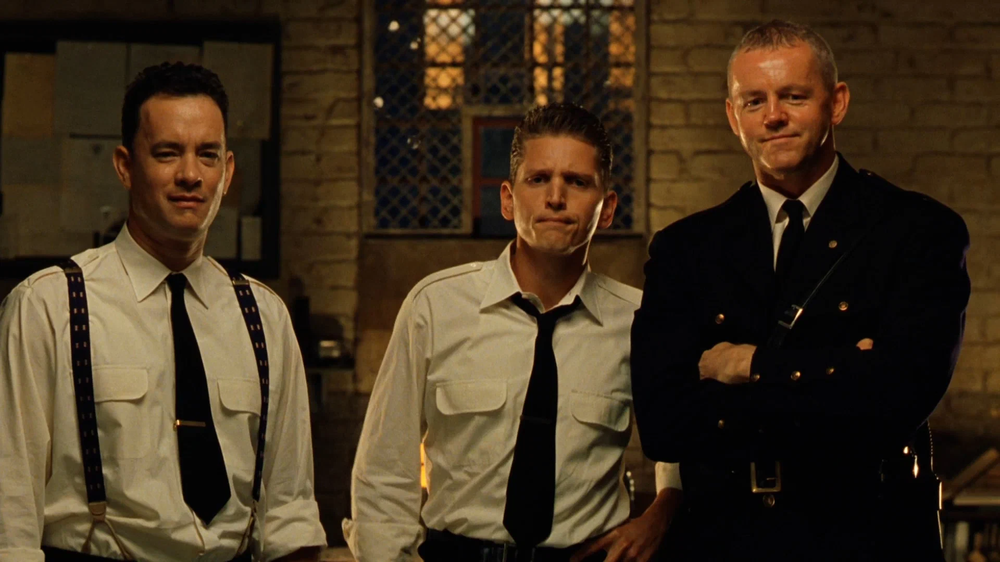

ТОП3 фильма
Побег из шоушенка
Бухгалтер Энди Дюфрейн обвинён в убийстве собственной жены и её любовника. Оказавшись в тюрьме под названием Шоушенк...

| Год | Страна | Жанр | Режиссер |
| 1994 | США | драма | Фрэнк Дарабонт |
1+1
Пострадав в результате несчастного случая, богатый аристократ Филипп нанимает в помощники человека...
| Год | Страна | Жанр | Режиссер |
| 2011 | Франция | комедия, драма | Оливье Накаш, Эрик Толедано |
Зелёная миля
Пол Эджкомб — начальник блока смертников в тюрьме «Холодная гора», каждый из узников...
| Год | Страна | Жанр | Режиссер |
| 1999 | США | фэнтези, драма | Фрэнк Дарабонт |